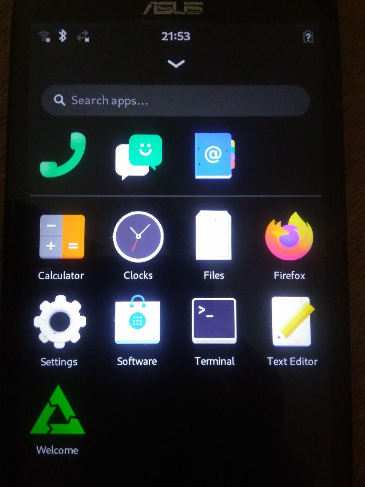

ASUS ZenFone 2 Laser (720p) (asus-z00l)
|
 ASUS ZenFone 2 Laser (720p) | |
| Manufacturer | ASUS |
|---|---|
| Name | ZenFone 2 Laser (720p) |
| Codename | asus-z00l |
| Released | 2015 |
| Category | testing |
| Original software | Android 6.0.1 (Android Marshmallow) |
| Hardware | |
| Chipset | Qualcomm Snapdragon 410 (MSM8916) |
| CPU | Quad-core 1.2 GHz Cortex-A53 |
| GPU | Adreno 306 |
| Display | 720x1280 |
| Storage | 16GB / 32GB |
| Memory | 2GB / 3GB |
| Architecture | aarch64 |
{kind=link}
| USB Networking |
Works
|
|---|---|
| Flashing |
Works
|
| Touchscreen |
Works
|
| Display |
Works
|
| WiFi |
Works
|
| FDE |
Works
|
| Mainline |
Works
|
| Battery |
Partial
|
| 3D Acceleration |
Works
|
| Audio |
Works
|
| Bluetooth |
Works
|
| Camera | |
| GPS | |
| Mobile data |
Works
|
| SMS |
Works
|
| Calls |
Works
|
| USB OTG / USB-C Role switching | |
| NFC | |
| Accelerometer |
Works
|
|---|---|
| Magnetometer | |
| Ambient Light | |
| Proximity | |
| Hall Effect | |
| Barometer | |
| Power Sensor | |
| Camera Flash | |
|---|---|
| Keyboard | |
| Touchpad | |
| USB-A | |
| HDMI/DP | |
| Ir TX | |
| Ir RX | |
| Stylus | |
| Haptics | |
| Ethernet | |
| FOSS bootloader | |
|
This device is based on the Snapdragon 410. See the SoC page for common tips, guides and troubleshooting steps |
| This Wiki is only targeted for Asus Zenfone 2 Laser (720p) (ZE550KL). With any other model you should always do some research before using anything from here blindly. You have been warned. No one is responsible. |
Contributors
- antonyjr
Maintainer(s)
- antonyjr
Users owning this device
- Antonyjr (Notes: The only phone I own which is mainlined and aims to run Phosh as daily driver)
- Fireman112 (Notes: Broken screen)
How to enter flash mode
| The following steps are not necessary since lk2nd 0.13.0, as Volume Down key for this device is finally supported. |
Press Volume Up + Power Key. At the time of writing lk2nd does not recognize volume down for this device so you can't enter into flashing mode with lk2nd when you flash your kernel to the boot partition.
The only workaround is to erase the boot partition completely by entering the stock fastboot. For this you have to turn your phone completely off(do not plug in anything since if it's charging then it boots). Now Use Volume Up + Power Key once you see the bootloader release the buttons. Now do the following,
$ fastboot erase boot $ fastboot flash boot lk2nd.img $ fastboot reboot $ # Now you should be in lk2nd
Unlocking Bootloader
Before you do anything to the device you should unlock the bootloader (Make sure to enable Developer Mode and USB Debugging in Android first).
| Asus has stopped the official maintenance of older devices. So, it's impossible to unlock the bootloader with the official app anymore. Described below is the unofficial method of unlocking taken from here. |
Since the recovery partition of the device is not locked by default we would flash TWRP first. Download TWRP from here and flash it to recovery.
$ # Boot into stock fastboot by pressing Vol Up + Power Key $ fastboot flash recovery twrp.img
Now Press Volume Down + Power Key while still in fastboot, Once you see your phone reboot and show the ASUS logo release the buttons. Now You should see TWRP, do the required changes by TWRP. Now reboot again and verify if Android is still working and again get into Recovery.
Also Please Turn Off Screen locking in TWRP settings which causes some trouble. Disable Screen Locking and reduce the Screen brightness.
Now make a backup of your Phone with TWRP to a USB Flashdrive using OTG Cable this is important to recover if you do something wrong or want to go back to Android after writing postmarketOS to your internal memory. (Because the phone will not install any other Android OS unless you are in your Stock Android with latest Firmware again)
For Installing Lineage OS you should do a dirty flash with the latest firmware update.
Now you must install SuperSU or other android root software(TWRP -> Install -> SuperSU.zip transferred from Computer). SuperSU worked for me.
Wipe all caches and reboot into your device. Hopefully it should be rooted.
Now connect your device to your computer with USB debugging enabled. Download this zip file and extract it to some location of your computer.
| For those unfortunate with Ubuntu, before executing the script below make sure:
1. You are in the plugdev group. Use id command to check. If you're not, add yourself with: $ sudo usermod -aG plugdev $LOGNAME You must log out for this change to take effect. 2. The system has the right udev rules. Check /etc/udev/rules.d/51-android.rules for the following line to be present: |
SUBSYSTEM=="usb", ATTR{idVendor}=="0b05", ATTR{idProduct}=="4daf", MODE="0666", GROUP="plugdev", SYMLINK+="android%n"
| and add it if necessary. Change "4daf" if it's different for your device. Use lsusb command to check. Reload the udev rules issuing the following command:
$ sudo udevadm control --reload-rules 3. fastboot command is finally working without sudo. Otherwise the script would fail. Don't forget to reconnect the device before this final check. |
Now go to the extracted directory of the zip and execute the following command while your phone connected with USB Debugging and without the screen lock state,
$ ./unlock_bootloader.sh
Make sure to allow permissions by SuperSU on your phone screen.
Now hopefully your device should be unlocked. To check this execute the following command. This will reboot your device into fastboot.
$ adb reboot bootloader $ fastboot oem device-info # It should say Bootloader: unlocked $ fastboot reboot
Installation
Install the lk2nd bootloader, as it is required to handle some quirks
with msm8916 devices on mainline kernels. Flash the lk2nd.img image to the boot partition with fastboot flash boot /path/to/lk2nd.img. lk2nd
also provides a fastboot interface that allows for flashing kernels without overwriting lk2nd itself. As soon as you flash this to this device the default boot will always be lk2nd, when you flash a valid mainline kernel you can't see lk2nd again. Read the above sections for workaround.
Once you have booted into lk2nd, follow Qualcomm_Snapdragon_410/412_(MSM8916)#Installation.